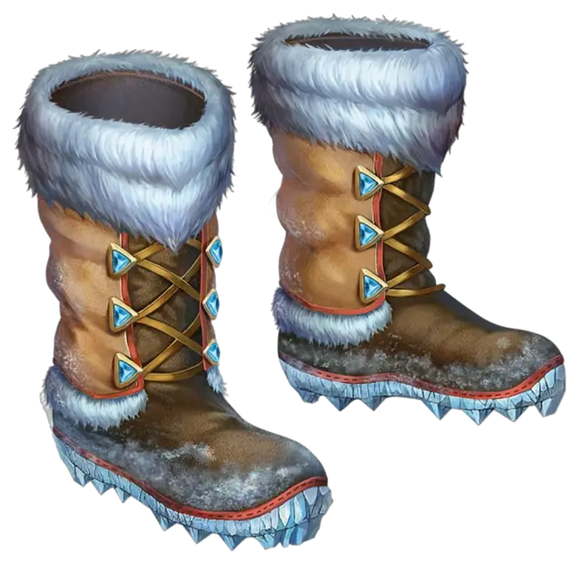

Заполярные сапоги
Boots of the Winterlands
Чудесный предмет, необычный (требуется настройка)

Рекомендованная стоимость 101-500 зм
Эти меховые сапоги очень плотные и тёплые. Пока вы их носите, вы получаете следующие преимущества:
- Вы получаете сопротивление урону холодом.
- Вы игнорируете труднопроходимую местность, созданную льдом или снегом.
- Вы нормально переносите температуру до -50 °F (-45 °C) без тёплой одежды. Если вы одеты в теплую одежду, то можете переносить температуру до -100 °F (-73 °C).